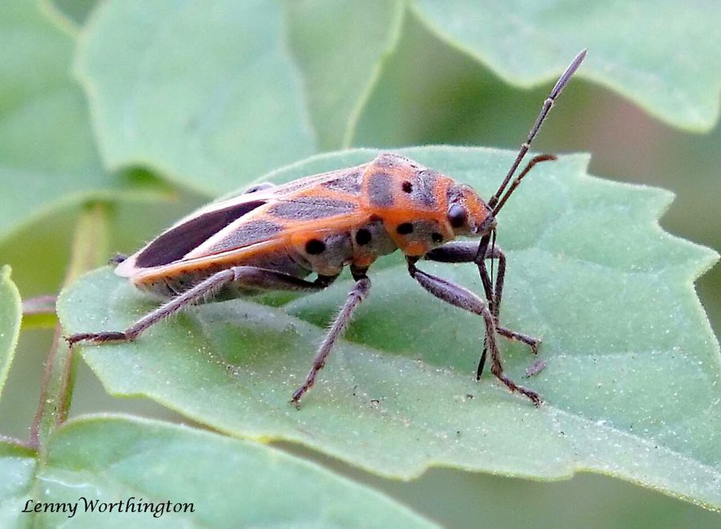

दुसुमियर सीड बगDussumier's Seed Bug
Graptostethus servus · Lygaeidae · INS-0219

- Scientific name वैज्ञानिक नाम
- Graptostethus servus (Fabricius, 1787)
- Family कुल
- Lygaeidae
- Hindi हिंदी
- दुसुमियर सीड बग
- Local names स्थानीय नाम
- dussumiers seed bug, graptostethus servus, red seed bug, dusumier seed bug
- Status here यहाँ की स्थिति
- native
- Movement आवागमन
- Resident, here all year
- Known from कहाँ दर्ज
- Others have published records from the wider Awadh–Purvanchal plain, none yet from Basti–Ayodhya अवध–पूर्वांचल से दूसरों के प्रकाशित अभिलेख, बस्ती–अयोध्या से अभी नहीं
- IUCN IUCN
- not evaluated
- Review समीक्षा
- not yet reviewed
When to look कब देखें
Present all year. साल भर मौजूद।
Tell it apart from इनसे अलग पहचानें
दुसुमियर सीड बग / Dussumier's Seed Bug
Graptostethus servus (Fabricius, 1787) — Lygaeidae
दुसुमियर सीड बग — खेतों की मेड़ों, बेलदार खरपतवारों और झाड़ियों पर पाया जाने वाला एक चटख लाल और काले रंग का खूबसूरत कीड़ा। इसकी पीठ पर सिंदूरी-लाल रंग के ऊपर काले धब्बों और पट्टियों का आकर्षक पैटर्न बना होता है। यह मुख्य रूप से जंगली लताओं और पौधों के पके बीजों का रस चूसता है। इसका चटक रंग पक्षियों को चेतावनी देता है कि यह स्वाद में कड़वा और विषैला है।
Quick Identification त्वरित पहचान
| Feature | Description |
|---|---|
| Habit | Medium-sized, elongate-ovate seed bug 8–9 mm long (Distant 1904) |
| Coloration | Sanguineous red or orange-red patterned with contrasting black markings (Fabricius 1787) |
| Pronotum | Red with two broad, shiny black longitudinal vittae on the disc (Distant 1904) |
| Scutellum | Black, triangular, with a conspicuous red or reddish-yellow apical point (Distant 1904) |
| Hemelytra | Red with a central black transverse fascia and black apical angle; membrane black (Distant 1904) |
| Membrane | Fuscous black with a distinct pale whitish apical crescentic margin (Fabricius 1787) |
Field tip: Look on climbing morning glory vines, wild malvaceous herbs, and canal-side weeds for bright red-and-black bugs feeding on seed capsules, recognizable by two thick black bands on the red thorax.
हिंदी — कैसे पहचानें: सिंदूरी लाल शरीर जिस पर काले रंग की दो चौड़ी पट्टियां होती हैं, लाल नोक वाली काली तिकोनी प्लेट, और पंखों के अंत में सफेद किनारे वाली काली झिल्ली।
Morphology शारीरिक संरचना
Measurements as given by Distant (1904):
| Measurement | Value | Source |
|---|---|---|
| Length | 8–9 mm | Distant (1904) |
Exoskeleton and head: Body elongate-ovate, moderately depressed, finely pubescent. Head triangular, bright red, with the tylus and basal area behind eyes black; eyes large, dark red; antennae four-segmented, black, with basal segment shortest and second segment longest.
Thorax and wings: Pronotum trapezoidal, narrowing anteriorly, bright scarlet or cinnabar-red with two broad black longitudinal stripes that widen posteriorly, separated by a red median carina. Scutellum equilateral, black, with an acute red apex. Hemelytra red, finely punctate; clavus with a black inner streak; corium marked with a central transverse black bar connecting to the inner margin and a black spot at the apical margin; membrane smoky-black with a neat whitish or translucent apical border.
Venter and legs: Venter sanguineous with broad black transverse segmental bands and lateral spots. Rostrum four-segmented, black, extending to metacoxae. Legs black or dark piceous, clothed with fine pale pubescence.
हिंदी: इसका शरीर लंबा और चपटा होता है। सिर लाल और आँखें उभरी हुई होती हैं। छाती लाल होती है जिस पर दो चौड़ी काली पट्टियां होती हैं। पंखों पर लाल-काले रंग का सुंदर संगम होता है और पैर काले होते हैं।
Behaviour & Ecology व्यवहार एवं पारिस्थितिकी
Graptostethus servus is a specialist seed predator adapted to warm, open agricultural and ruderal habitats. It feeds predominantly on seeds of Convolvulaceae and Malvaceae, piercing mature dry pods with its slender stylets and injecting digestive enzymes to liquefy the oily endosperm.
The bold black-and-red aposematic coloration serves as a visual warning signal to vertebrate predators. Like many lygaeids, the bug sequesters unpalatable cardiac glycosides and toxic secondary metabolites from its host seeds, rendering both adults and nymphs distasteful to birds and lizards. When disturbed on foliage, adults run swiftly or take wing in sudden, low-level flights. In cool mornings, adults aggregate in small clusters on sunlit seed pods to bask before beginning feeding activities.
हिंदी: यह कीड़ा जंगली लताओं और घासों के बीजों का रस पीता है। इसका चमकीला लाल-काला रंग पक्षियों को चेतावनी देता है कि यह कड़वा है। धूप निकलने पर यह पौधों की फुनगियों पर बैठकर गर्मी लेता है।
Life Cycle / Phenology जीवन चक्र एवं ऋतुचक्र
| Period | Phenological Event |
|---|---|
| March–April | Overwintered adults become active as spring temperatures rise and host plants flower |
| May–June | Eggs laid in small clusters among drying calyces and leaf litter beneath host plants |
| July–September | Nymphs pass through five instars, feeding gregariously on ripening seed clusters |
| October–November | Peak adult abundance on dry post-monsoon weeds; dispersal flights to winter shelters |
Nymphs are predominantly bright crimson with small dark wing pads, remaining clustered on seed pods throughout their early stages.
हिंदी: बसंत ऋतु में यह सक्रिय होकर अंडे देते हैं। बरसात के बाद जब खरपतवारों में बीज पकते हैं तब इनके बच्चों की संख्या बहुत बढ़ जाती है। जाड़ों में वयस्क कीड़े पत्तियों के नीचे छिप जाते हैं।
Host Plants or Prey पोषक पौधे अथवा शिकार
- Convolvulaceous Weeds: Sucks ripening seeds of wild morning glories and Pink Morning Glory.
- Malvaceous Herbs: Forages on mature seeds of Arrowleaf Sida and wild mallows.
- Agricultural Crops: Occasionally feeds on ripening seeds of sweet potato and pulses.
हिंदी: यह बेशर्म की लता, बरियार, और शकरकंद की लताओं में बनने वाले बीजों को खाकर अपना जीवन बिताता है।
Predators / Natural Enemies प्राकृतिक शत्रु
- Robber Flies: Large asilid flies (Promachus) attack flying adults despite their warning coloration.
- Predatory Spiders: Jumping spiders (Salticidae) and lynx spiders stalk nymphs on host stems.
- Parasitoids: Scelionid micro-wasps parasitize egg batches laid in leaf litter.
हिंदी: शिकारी मक्खियाँ और पेड़ों पर कूदने वाली मकड़ियां इसका शिकार करती हैं। छोटी परजीवी ततैया इसके अंडों को नष्ट करती हैं।
Agricultural / Human Relevance कृषि एवं मानवीय उपयोगिता
Agrarian Impact:
- Weed seed consumption. By consuming thousands of fallen seeds of aggressive convolvulaceous and malvaceous weeds, it acts as a beneficial natural biological seed suppressor.
- Minor crop feeding. Rarely causes measurable economic damage to cultivated crops, feeding mainly on senescent, already-matured seed heads.
- Harmless presence. Completely harmless to humans, domestic livestock, and household structures.
Today. A familiar, conspicuous native element of field verges, village hedges, and fallow wastelands throughout eastern Uttar Pradesh.
हिंदी: यह हानिकारक जंगली खरपतवारों के बीजों को खाकर उनकी रोकथाम करने में मदद करता है। फसलों को इससे कोई खास नुकसान नहीं होता और यह किसानों के लिए एक उपयोगी कीट है।
Expected Locally स्थानीय संभावना एवं उपस्थिति
Not a field record. Written from published accounts for eastern Uttar Pradesh. No confirmed local sighting yet — if you have seen it, that is what the atlas needs.
अभी तक स्थानीय पुष्टि नहीं। यह विवरण प्रकाशित स्रोतों से है, किसी अवलोकन से नहीं।
Expected in eastern Uttar Pradesh across agricultural crops, orchard groves, riverine scrub, and rural vegetation across Basti, Sant Kabir Nagar, and Ayodhya. GBIF holds published records from the wider Awadh–Purvanchal plain, none yet from Basti–Ayodhya. A first local record would be a dated photograph of the red pronotum with two black stripes and red-black hemelytra, submitted with locality details through the project's About page.
Distribution भौगोलिक वितरण
Global range: Widespread across the Old World tropics and subtropics, from Africa and the Mediterranean through South Asia, Southeast Asia, and Australasia.
In India: Abundantly recorded from the Indo-Gangetic plain, West Bengal, peninsular India, and the Western Ghats (Distant 1904).
In Uttar Pradesh: Common in open agricultural tracts and wasteland scrub throughout the state.
In Basti district / eastern UP: Expected on morning glory vines, canal-side weeds, and crop edges.
हिंदी: भारत के सभी मैदानी राज्यों, दक्षिण एशिया, अफ्रीका और ऑस्ट्रेलिया के गर्म इलाकों में यह कीड़ा आम पाया जाता है।
Research Questions शोध प्रश्न
- What proportion of wild Ipomoea carnea seed crops is destroyed by Graptostethus servus in Awadh? / अवध के कछारों में बेशर्म के कितने प्रतिशत बीजों को यह कीड़ा नष्ट कर देता है?
- Which cardenolides or secondary metabolites are sequestered by nymphs feeding on malvaceous seeds? / बरियार के बीज खाने पर इसके शरीर में कौन-से विषैले रसायन जमा होते हैं?
- What is the preference hierarchy between convolvulaceous and malvaceous seeds under laboratory choice tests? — Present equal seed weights and record feeding puncture frequencies.
- Does the pale apical membrane border serve as an optical distractor during evasive flight? — High-speed video analysis of predatory attacks by jumping spiders.
- How does soil litter moisture influence egg hatchability in agricultural field margins? / क्या मेड़ों की सूखी घास में नमी की कमी से इसके अंडों पर असर पड़ता है?
Similar Species समान प्रजातियाँ
| Species | How to tell apart | हिंदी |
|---|---|---|
| Cotton Stainer (Dysdercus cingulatus) | Red with single black spot on each wing; no pronotal vittae; white abdominal bands | लाल शरीर, पंख पर एक काला बिंदु, पेट पर सफेद पट्टी |
| Spotted Dirt Bug (Pseudopachybrachius guttus) | Dark brown to blackish; much smaller; forelegs swollen with spines | गहरे भूरे-काले रंग का, बहुत छोटा, मोटे कांटेदार पैर |
| Pointed Stink Bug (Erthesina acuminata) | Grey-brown shield bug; much larger; head sharply pointed | मटमैला भूरा ढाल जैसा कीड़ा, सिर आगे से नुकीला |
Field rule: Sanguineous red seed bug with two broad black stripes on the red pronotum, a black scutellum with a red tip, and black wing covers with a central transverse black bar identifies Graptostethus servus.
Taxonomy & Classification वर्गिकी एवं वर्गीकरण
Original description. Described by Johan Christian Fabricius in 1787 as Cimex servus in Mantissa Insectorum, vol. 2, p. 300. Later transferred to Graptostethus Stål.
Subspecies. A polymorphic species across its extensive geographic range; several regional varieties have been named, but mainland South Asian populations represent the nominotypical form.
Family and order placement. Belongs to the seed bug family Lygaeidae, subfamily Lygaeinae, in the order Hemiptera.
Phylogenetic notes. Characterized by prominent aposematic red-and-black coloration, distinct longitudinal pronotal stripes, and non-incrassate fore femora.
IUCN status rationale. Not evaluated in the master expansion list; it is a very common, widespread native granivorous insect with stable global populations.
हिंदी: जोहान क्रिश्चियन फैब्रिकियस ने 1787 में इसका वैज्ञानिक वर्णन 'साइमेक्स सर्वस' नाम से किया था। बाद में इसे 'ग्रेप्टोस्टेथस' वंश में रखा गया। यह लाइगैइडी कुल का सदस्य है।
Photo Gallery छायाचित्र दीर्घा
No photos yet — add field photos to media/species/dussumiers_seed_bug/ and run node scripts/sync_photos.js.
Photos needed आवश्यक फोटो
- [ ] Adult feeding on a dry morning glory seed capsule (सूखे बीज की फली पर रस चूसता वयस्क कीड़ा)
- [ ] Dorsal view showing red pronotum with two black stripes (लाल कंधे पर दो काली पट्टियों का ऊपरी दृश्य)
- [ ] Cluster of bright red nymphs on a host plant stem (तने पर बैठे लाल रंग के छोटे बच्चों का गुच्छा)
References संदर्भ सूची
- Fabricius, J.C. (1787). Mantissa Insectorum, vol. 2, p. 300. Christ. Gottl. Proft, Hafniae.
- Distant, W.L. (1904). The Fauna of British India, including Ceylon and Burma: Rhynchota, vol. 2, p. 8. Taylor and Francis, London.
- Péricart, J. (2001). Family Lygaeidae. In Catalogue of the Heteroptera of the Palaearctic Region, vol. 4, pp. 35–220. The Netherlands Entomological Society, Amsterdam.
- Slater, J.A. (1964). A Catalogue of the Lygaeidae of the World, vol. 1, pp. 49–55. University of Connecticut, Storrs.
- Stål, C. (1868). Hemiptera Fabriciana. Kongliga Svenska Vetenskaps-Akademiens Handlingar, 7(11), pp. 1–148.
- GBIF Occurrence Data — Graptostethus servus (Fabricius, 1787), India (2025).
Source file: species/fauna/insects/dussumiers_seed_bug.md